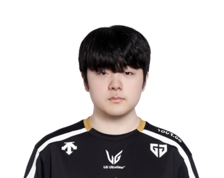
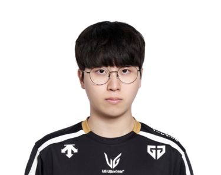
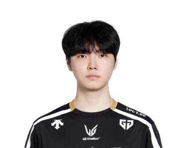

¿Quién tiene más Elo en la LCK?
Los 15 primeros de los 55 jugadores que la LCK (Corea) tiene en el leaderboard, ordenados por el Elo de su mejor cuenta y medidos en kr. La tabla va de Challenger · 2582 LP a Challenger · 2301 LP. Medido el 2026-09-03.
| # | Jugador | Equipo | Rol | Elo | Victorias | KDA |
|---|---|---|---|---|---|---|
| 1 | Lucid | DK | Jungle | Challenger · 2582 LP | 55 % de 732 | 2.98 |
| 2 |  Canyon |
GENG | Jungle | Challenger · 2529 LP | 57 % de 555 | 2.93 |
| 3 | Smash | DK | Bot | Challenger · 2526 LP | 53 % de 799 | 2.75 |
| 4 | Zeka | HLE | Mid | Challenger · 2519 LP | 56 % de 570 | 2.79 |
| 5 | ShowMaker | DK | Mid | Challenger · 2502 LP | 56 % de 633 | 3.17 |
| 6 | Peyz | T1 | Bot | Challenger · 2487 LP | 54 % de 824 | 2.49 |
| 7 | VicLa | BFX | Mid | Challenger · 2484 LP | 56 % de 575 | 2.59 |
| 8 | HLE | Bot | Challenger · 2423 LP | 55 % de 846 | 2.54 | |
| 9 |  Kiin |
GENG | Top | Challenger · 2417 LP | 57 % de 530 | 2.45 |
| 10 | Pungyeon | BRO | Mid | Challenger · 2402 LP | 52 % de 1558 | 2.61 |
| 11 | Casting | BRO | Top | Challenger · 2401 LP | 54 % de 805 | 2.48 |
| 12 | Frog | KRX | Top | Challenger · 2374 LP | 52 % de 941 | 2.51 |
| 13 | Siwoo | DK | Top | Challenger · 2364 LP | 52 % de 1317 | 2.09 |
| 14 |  Chovy |
GENG | Mid | Challenger · 2344 LP | 61 % de 345 | 3.20 |
| 15 | Sharvel | DNS | Jungle | Challenger · 2301 LP | 51 % de 1165 | 2.90 |
De esta liga se publica el Elo, no el Riot ID: las cuentas con nombre se indexan cuando un servidor sigue la liga, y ahora mismo eso está hecho en la LEC.